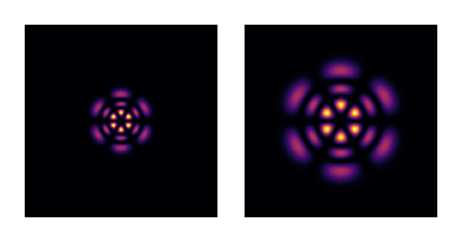

Field Retrieval: Reconstructing Complex Fields from Intensity Measurements
This tutorial demonstrates phase retrieval using gradient-based optimization. From intensity-only measurements in two planes, we reconstruct the full complex field (amplitude and phase) using automatic differentiation.
The Phase Problem
Standard detectors measure only intensity |u|², losing phase information. However, with measurements at multiple propagation distances, the complex field can be recovered through optimization - a generalization of the Gerchberg-Saxton algorithm using gradients rather than alternating projections.
using FluxOptics, Zygote, CairoMakie
using Random
Random.seed!(15); # Determinist exampleGround Truth: Laguerre-Gaussian Mode
We create a high-order LG mode as our target field. This will serve as the ground truth - we'll measure its intensity at two planes, then attempt to reconstruct the complex field from these measurements alone.
ns = 512, 512
ds = 2.0, 2.0
x_vec, y_vec = spatial_vectors(ns, ds)
λ = 1.064
z1 = 5000.0
z2 = 15000.0
w0 = 50.0
m, n = 2, 3
u0_th = LaguerreGaussian(w0, m, n; kind = :odd)(x_vec, y_vec)
u1_th = LaguerreGaussian(w0, m, n, λ, z1; kind = :odd)(x_vec, y_vec)
u2_th = LaguerreGaussian(w0, m, n, λ, z2; kind = :odd)(x_vec, y_vec)
visualize(((u0_th, u1_th, u2_th),), intensity; colormap=:inferno, height=120)
Intensity Measurements
In a real experiment, we would measure only the intensity at two planes. Here we simulate these measurements from our known ground truth.
I1 = abs.(u1_th) .^ 2
I2 = abs.(u2_th) .^ 2
@assert isapprox(sum(I1)*prod(ds), 1; atol = 1e-7) # Power normalized to unity
@assert isapprox(sum(I2)*prod(ds), 1; atol = 1e-7) # Power normalized to unity
visualize(((I1, I2),), real; colormap=:inferno, height=120)
Initial Guess: Random Speckle
We start from a random speckle pattern - a generic field with no knowledge of the target mode. The optimization will transform this into the LG mode.
NA = 0.01
speckle_dist = generate_speckle(ns, ds, λ, NA; envelope = Gaussian(3*w0))
u0 = ScalarField(speckle_dist, ds, λ)
visualize(u0, (intensity, complex); colormap=(:inferno, :dark), height=120)
Optical System Setup
We construct the propagation system with probes to capture fields at measurement planes. The source field is trainable - its complex values will be optimized.
p1 = RSProp(u0, z1; use_cache = true)
p2 = RSProp(u0, z2-z1; use_cache = true)
s = ScalarSource(u0; trainable = true, buffered = true)
fp1 = FieldProbe()
fp2 = FieldProbe()
system = s |> p1 |> fp1 |> p2 |> fp2 |> (; inplace = true);Loss Function
We minimize the difference between predicted and measured intensities using a correlation-based metric. The loss is defined as 2 - (correlation₁ + correlation₂), where perfect reconstruction gives loss = 0.
sI1 = sqrt.(I1)
sI2 = sqrt.(I2)
eps = 1e-15 * maximum(I1)
function f_opt(m)
_, probes = m()
u1 = probes[fp1]
u2 = probes[fp2]
(2 -
(dot(sqrt.(abs2.(u1.electric) .+ eps), sI1) +
dot(sqrt.(abs2.(u2.electric) .+ eps), sI2)) * prod(ds))
endOptimization
We use FISTA (Fast Iterative Shrinkage-Thresholding Algorithm) with gradient-based optimization. The non-convex nature of phase retrieval means convergence can take many iterations, with the optimizer navigating through local minima. Power normalization at each step prevents divergence.
opt = setup(Fista(1), system)
fill!(s, u0)
losses = Float64[]
for i in 1:1000
val, grads = Zygote.withgradient(f_opt, system)
FluxOptics.update!(opt, system, grads[1])
normalize_power!(get_source(s), 1) # Power normalization to avoid divergence
push!(losses, val)
endThe convergence curve reveals the non-convex nature of the phase retrieval problem, with several plateaus before reaching the global minimum.

Reconstructed Field
After optimization, we extract the reconstructed field and propagated versions at the measurement planes. The complex field structure (intensity and phase) is successfully recovered from intensity-only measurements.
_, probes = system()
u1 = probes[fp1]
u2 = probes[fp2]
visualize((s, u1, u2), (intensity, phase);
colormap=(:inferno, :twilight), show_colorbars=true, height=150)Reconstruction Quality
We quantify reconstruction quality using coupling efficiency - the overlap integral between reconstructed and true fields. Values above 99% indicate excellent reconstruction.
| Plane | Coupling Efficiency |
|---|---|
| z = 0 | 99.995% |
| z₁ = 5 mm | 99.995% |
| z₂ = 15 mm | 99.995% |
The reconstruction achieves >99.99% coupling efficiency, demonstrating accurate recovery of both amplitude and phase from intensity measurements alone.
Extension to Noisy Measurements
With realistic measurement noise, regularization techniques such as Total Variation (TV) or support constraints become necessary. The core optimization framework remains the same, with proximal operators added to the optimization rule.
This page was generated using Literate.jl.